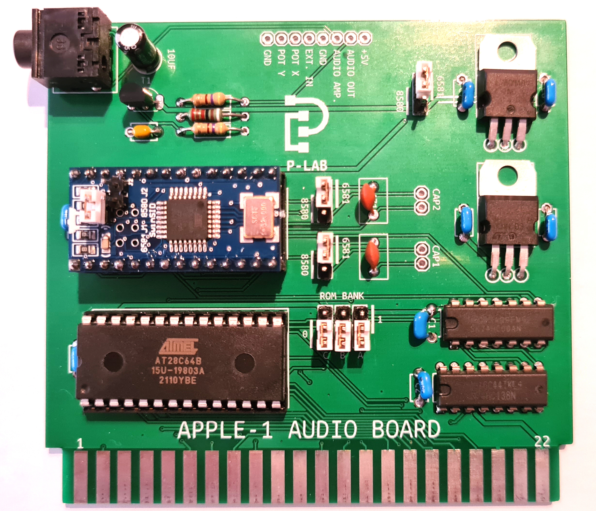

APPLE-1 AUDIO BOARD

Documents hosted here:
PROJECT DOCUMENTATION
User's manual
ITA
|
ENG
Special Juke-Box ROMPACK to play the demo on this specific board
(Juke-Box Card + Bus Extender required. See changelog.txt for instructions)
29c020_v2022-01-12_SID_CC00
External links:
Official Video [YouTube]
Sound Demo [YouTube]

P-Lab 2020-21